Dany jest walec o promieniu podstawy długości r i wysokości długości h.
Naszkicujmy jego przekrój osiowy:
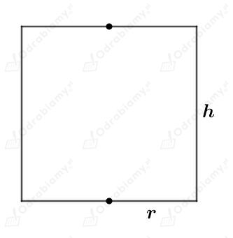
Objętość tego walca wynosi V. Mamy stąd:
Wyznaczmy pole powierzchni całkowitej tego walca jako funkcję zmiennej r. Mamy:
Wyznaczmy pochodną funkcji P. Mamy:
Wyznaczmy miejsce zerowe pochodnej P'. Mamy:
Zauważmy, że
oraz
Zatem
oraz
Czyli pole powierzchni całkowitej tego walca jest najmniejsze dla
Wyznaczmy długość wysokości tego walca. Mamy:
Zauważmy, że
Zatem przekrój osiowy tego walca jest kwadratem.
co kończy dowód.
Dana jest kula o promieniu długości R. Wyznaczmy objętość tej kuli:
W podaną kulę wpisano walec o promieniu podstawy długości r i wysokości długości h.
Narysujmy przekrój środkowy podanej sytuacji. Mamy:
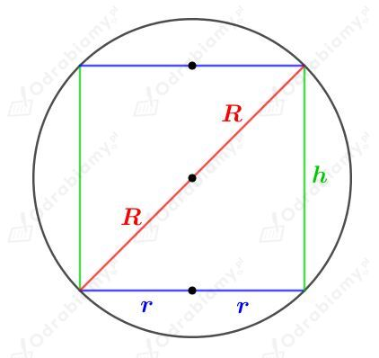
Korzystając z twierdzenia Pitagorasa mamy:
Założenie:
zatem
Wyznaczmy objętość tego walca jako funkcję zmiennej h. Mamy:
Wyznaczmy pochodną funkcji h. Mamy:
Wyznaczmy miejsce zerowe tej pochodnej. Mamy:
Z otrzymanych liczb tylko druga należy do dziedziny rozważanej funkcji.
Naszkicujmy przybliżony wykres funkcji pochodnej:
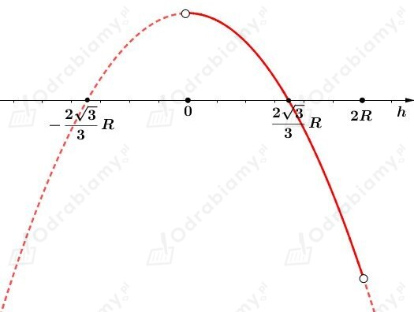
Zauważmy, że
oraz
Zatem
oraz
Więc objętość tego walca jest największa dla
Wyznaczmy tę największą objętość. Mamy:
Wyznaczmy stosunek objętości walca do objętości kuli. Mamy:
Odp. Walec wpisany w kulę może najwięcej stanowić √3/3 jej objętości.
Rysunek:
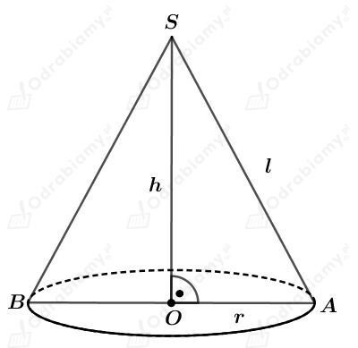
Korzystając z twierdzenia Pitagorasa dla trójkąta OAS mamy:
Zauważmy, że
czyli
Wyznaczmy objętość tego stożka jako funkcję zmiennej h. Mamy:
Wyznaczmy pochodną funkcji V. Mamy:
Wyznaczmy miejsce zerowe funkcji pochodnej V'. Mamy:
Z otrzymanych liczb tylko druga liczba należy do dziedziny rozważanej funkcji.
Naszkicujmy przybliżony wykres pochodnej. Mamy:
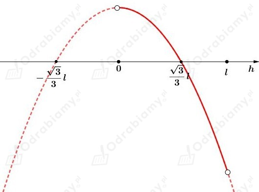
Zauważmy, że
oraz
Więc
oraz
Zatem objętość tego stożka jest największa dla
Wyznaczmy długość promienia r. Mamy:
Wyznaczmy miarę kąta środkowego 𝛼 wycinka koła, który tworzy po rozwinięciu powierzchnia boczna tego stożka. Mamy:
Rysunek:
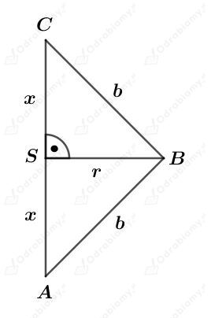
Trójkąt ABC obracamy wokół jego podstawy AC.
Wiedząc, że obwód tego trójkąta jest równy 24 cm mamy:
Założenie:
czyli
Korzystając z twierdzenia Pitagorasa dla trójkąta SBC mamy:
Wyznaczmy objętość tej bryły jako funkcję zmiennej x. Mamy:
Funkcja V jest funkcją kwadratową. Ramiona paraboli będącej wykresem tej funkcji skierowane są do dołu, więc funkcja ta przyjmuje największą wartość w punkcie będącym wierzchołkiem.
Korzystając ze wzoru na pierwszą współrzędną p wierzchołka paraboli mamy:
Zatem bryła ta przyjmuje największą objętość dla x=3.
Zatem
oraz
Odp. Podstawa tego trójkąta ma długość 6 cm, a jego ramię ma długość 9 cm.
Dana jest kula o środku w punkcie O i promieniu długości 12 cm.
W podaną kulę wpisano stożek o promieniu podstawy długości r i wysokości długości h.
Rysunek:
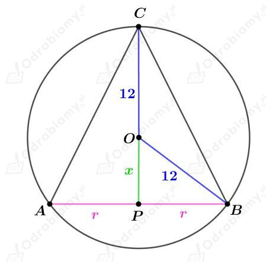
Zauważmy, że
Korzystając z twierdzenia Pitagorasa dla trójkąta PBO otrzymujemy:
Zauważmy, że
więc
Wyznaczmy objętość tego stożka jako funkcję zmiennej h. Mamy:
Wyznaczmy pochodną funkcji V. Mamy:
Wyznaczmy miejsce zerowe funkcji pochodnej V'. Mamy:
Z otrzymanych liczb, tylko liczba h=16 należy do dziedziny badanej funkcji.
Naszkicujmy przybliżony wykres funkcji pochodnej:
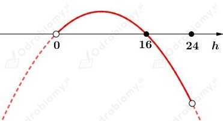
Zauważmy, że
oraz
Zatem
oraz
Zatem największą objętość ma stożek, dla którego h=16 cm.
Wyznaczmy długość promienia podstawy tego stożka. Mamy:
Dany jest stożek o promieniu podstawy długości r, wysokości długości h oraz tworzącej długości l.
Na kuli o promieniu długości 4 cm opisano podany stożek.
Rysunek:
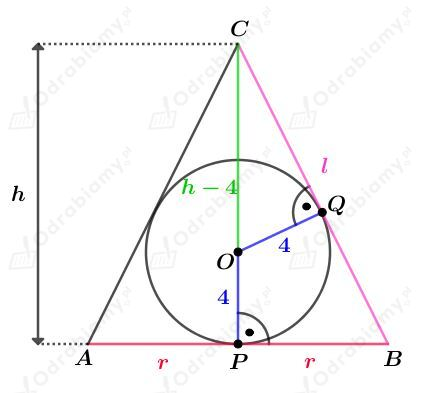
Korzystając z twierdzenia Pitagorasa dla trójkąta PBC mamy:
czyli
Korzystając z podobieństwa trójkątów PBC i OQC otrzymujemy:
Podstawiając l otrzymane z twierdzenia Pitagorasa mamy:
Założenie:
więc
Wyznaczmy objętość tego stożka jako funkcję zmiennej r. Mamy:
Wyznaczmy pochodną funkcji V. Korzystając ze wzoru na pochodną ilorazu mamy:
Wyznaczmy miejsce zerowe pochodnej V'. Mamy:
czyli
Z otrzymanych liczb, tylko liczba 4√2 należy do dziedziny badanej funkcji.
Naszkicujmy przybliżony wykres pochodnej. Mamy:
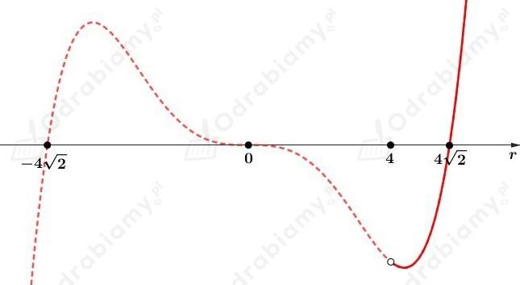
Zauważmy, że
oraz
Zatem
oraz
Czyli objętość tego stożka jest najmniejsza dla
Wyznaczmy objętość tego stożka. Mamy:
Dany jest stożek o promieniu podstawy długości r i wysokości długości h.
W ten stożek wpisano prostopadłościan.
Krawędzie podstawy tego prostopadłościanu mają długości x i 2x.
Niech d będzie długością przekątnej podstawy tego prostopadłościanu. Korzystając z twierdzenia Pitagorasa mamy:
Naszkicujmy przekrój przechodzący przez przekątną podstawy tego prostopadłościanu. Mamy:
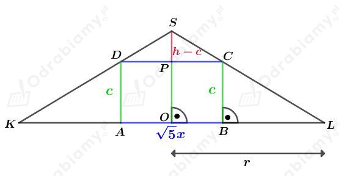
Korzystając z podobieństwa trójkątów KLS i DCS otrzymujemy:
Założenie:
więc
Wyznaczmy objętość tego prostopadłościanu jako funkcję zmiennej x. Mamy:
Wyznaczmy pochodną funkcji V. Mamy:
Wyznaczmy miejsce zerowe pochodnej V'. Mamy:
Z otrzymanych liczb, tylko druga należy do dziedziny badanej funkcji.
Naszkicujmy przybliżony wykres funkcji pochodnej. Mamy:
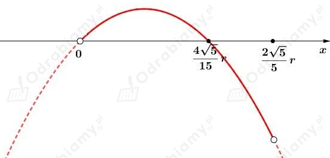
Zauważmy, że
oraz
Zatem
oraz
Czyli objętość tego prostopadłościanu jest największa dla
Wyznaczmy największą możliwą objętość tego prostopadłościanu. Mamy:
Dany jest trapez równoramienny, którego obwód wynosi 22 cm.
Ten trapez obracamy wokół dłuższej podstawy długości 6 cm.
Otrzymana bryła to sklejenie walca i dwóch stożków.
Rysunek:
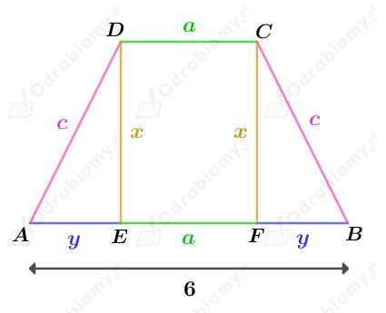
Wiedząc, ze obwód tego trapezu wynosi 22 cm mamy:
Rozważając długość odcinka AC mamy:
Korzystając z twierdzenia Pitagorasa dla trójkąta AED mamy:
Zatem:
oraz
Założenie:
więc
Wyznaczmy objętość tej bryły jako funkcję zmiennej x. Mamy:
Wyznaczmy pochodną funkcji V. Mamy:
Wyznaczmy miejsce zerowe pochodnej V'. Mamy:
więc
Z otrzymanych liczb, tylko x=√35 należy do dziedziny badanej funkcji.
Naszkicujmy przybliżony wykres funkcji pochodnej. Mamy:
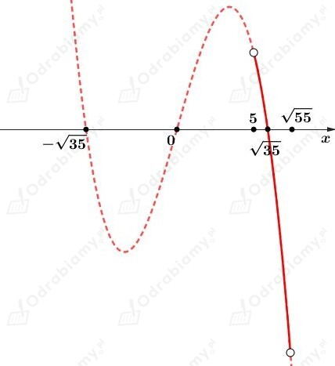
Zauważmy, że
oraz
Zatem
oraz
Zatem objętość tej bryły jest największa dla
Wyznaczmy długość ramienia tego trapezu. Mamy:
Wyznaczmy długość krótszej podstawy tego trapezu. Mamy:
Narysujmy bryły oraz przekrój walca i stożka razem.
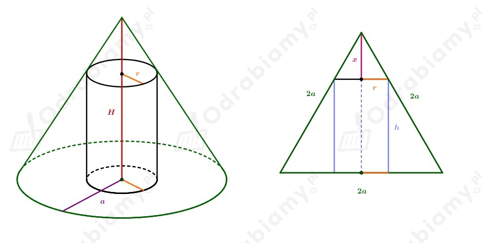
Zauważmy, że przekrój stożka to trójkąt równoboczny o boku długości 2a, więc promień podstawy stożka to a. Natomiast wysokość trójkąta będącego przekrojem stożka wynosi
Wobec tego
Z podobieństwa trójkątów - jeden jest połową przekroju stożka a drugi ma boki oznaczone jako r oraz x - otrzymujemy:
Podstawiamy wyliczoną długość x.
Objętość walca policzymy ze wzoru
Niech
Obliczymy pochodną w celu znalezienia maksimum
Szukamy miejsca zerowego
Stąd
Wykres pochodnej.
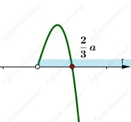
W tym punkcie mamy maksimum, ponieważ pochodna zmienia znak.
Zatem wysokość walca wynosi
Obliczmy tą maksymalną objętość walca
Obliczmy objętość kuli wpisanej w ten stożek. Zauważmy, że promień okręgu wpisanego w trójkąt równoboczny stanowi 1/3 wysokości tego trójkąta.
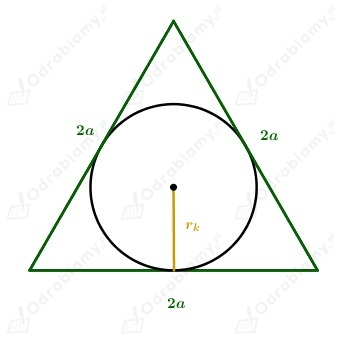
Promień tej kuli to promień okręgu wpisanego w trójkąt równoboczny o boku 2a.
Objętość kuli wynosi
Zauważmy, że jest równa objętości walca.
co kończy dowód.